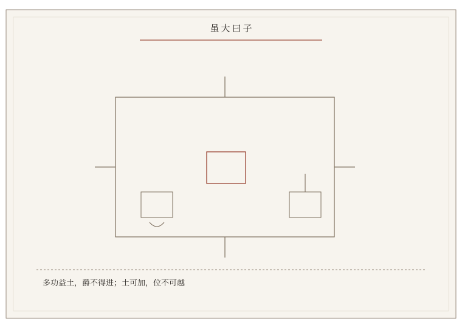

曲礼下 · 二·五十二 · 第 175 课
九州之外，四夷之长虽有大国之地，入天子之国只称「子」；于内自称「不穀」，于外自称「王老」。注「子犹牧也……虽有侯伯之地，本爵亦无过子」。
说什么事：爵不随土而进。
落在哪一层：礼，兼及礼意。论本爵之限与谦称。
为何编在此位：牧之后为四夷之长，畿外之序由内而外，至最远一层。
【经】其在東夷、北狄、西戎、南蠻，雖大曰「子」。於內自稱曰「不穀」，於外自稱曰「王老」。
【注】謂九州之外長也。天子亦選其諸侯之賢者以為之子。子猶牧也。入天子之國曰子，天子亦謂之子，雖有侯伯之地，本爵亦無過子，是以同名曰子。於內自稱曰「不穀」，與民言之謙稱。穀，善也。於外自稱曰「王老」，威遠國也。外，亦其戎狄之中。
【疏】此天子亦选其中贤者为之牧也，但不知几国立一人耳。卑不得名为牧，又不得谓为父舅，其本爵不过子男。若其本爵子者，今朝天子摈辞曰子；若本爵是男，亦谓为子也。所以尔者，举其高者言之，亦尊异故也。其或有多功益土，虽加侯伯之地，而爵不得进，终守子男，以卑远故也。今虽别为牧长，而同呼为子，不得过本爵也。《尔雅》云：「九夷、八狄、七戎、六蛮，谓之四海。」李巡注：「四海，远于四荒，晦冥无形，不可教诲，故云四海也。海者晦也。」崔云：「方伯牧称天子之老，四夷之长称曰王老。方伯之职，带三公之任，犹谓之内臣，化同天子，无有归往之义，故云天子之老；四夷之君去王远，由有归往之义，贤始得为长，故以王老为称也。」
虽大曰子 注「虽有侯伯之地，本爵亦无过子」。
子犹牧也 疏「虽别为牧长，而同呼为子」。
不穀 注「与民言之谦称。穀，善也」。不穀，不善。
王老 注「威远国也」。自称天子之老臣。
四海 《尔雅》九夷八狄七戎六蛮。李巡「海者晦也」。
东夷、北狄、西戎、南蛮之长，即使地方广大，入天子之国也只称「子」。对自己人称「不穀」，对外人称「王老」。
此节最动人的一句是「虽大曰子」。地可以加，爵不可以进。礼在这里划了一条线：土广不等于位尊。而「不穀」与「王老」，一内一外，谦与威同时用在一个人的嘴里。
第一层 爵不随土 疏「多功益土，虽加侯伯之地，而爵不得进，终守子男」。此与後世「以地进阶」的做法正相反。礼的位次由本爵定，不由实土定。
第二层 举高以称 疏「若本爵是男，亦谓为子」，「举其高者言之，亦尊异故也」。天子称之，取本爵中较高者，是给的体面；而体面的上限，就到子。
第三层 不穀与王老 对内称不穀，是谦；对外称王老，是威。崔氏解释得极清：方伯带三公之任，是内臣，化同天子，所以称「天子之老」；四夷去王远，有归往之义，故称「王老」。同一个「老」字，一系于天子，一自居于王。
第四层 四海之义 李巡「海者晦也」，谓其晦冥无形、不可教诲。此语有傲气，也有实情：最远的那一圈，礼只能给它一个名，给不了它一套教。
与今日何干 对外关系的难处，古今同：给名分容易，给秩序难。
| 左 | 右 |
|---|---|
| 虽大曰子 | 虽有侯伯之地，本爵不过子 |
| 子犹牧也 | 别为牧长，而同呼子 |
| 于内自称不穀 | 与民言之谦称 |
| 于外自称王老 | 威远国也 |
| 多功益土，爵不得进 | 土可加，位不可越 |
| 海者晦也 | 远而不可教诲 |
画一枚大方形地片，四边各向外伸出一小段（示「虽大」）；地片之上压着一枚小方牌，牌明显小于地片（示「曰子」）。地片下方另画两枚并排的小签：左签向下弯（示「不穀」之谦），右签向上立（示「王老」之威）。四边伸出的四段长短相等。不写文字、不画人。赭色只用在压在地片上的那枚小方牌。
